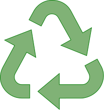
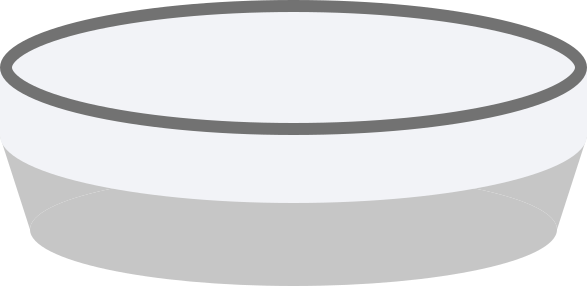
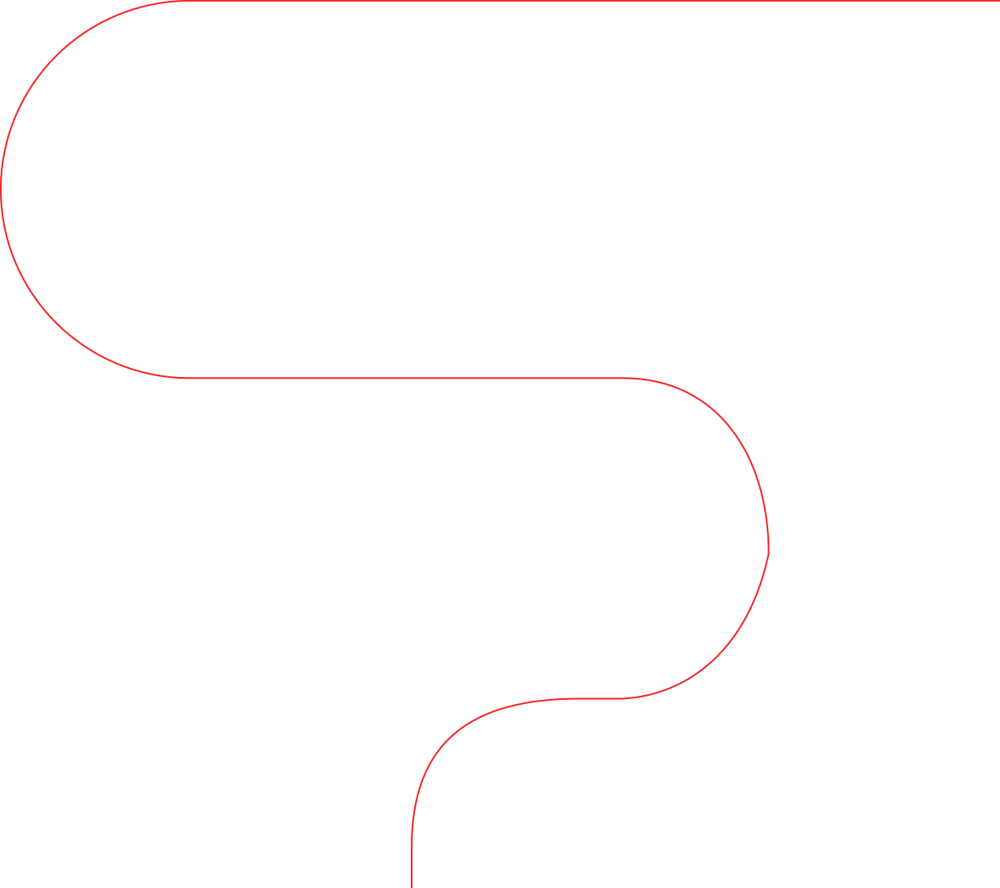

Во время полёта на «Востоке-1» Гагарин употреблял мясное и шоколадное пюре в тюбиках. Этот момент стал не только технологическим экспериментом, но и доказательством того, что приём пищи в космосе возможен. Однако сразу стало очевидно, что подобный формат не подходит для длительных миссий: космонавты отмечали снижение аппетита, отторжение и психологическую усталость от однообразной еды.




